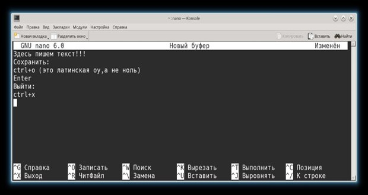

Nano - консольный,текстовой редактор
Редактор nano - это консольный текстовый редактор.Более “продвинутый” чем cat.
Он есть во всех дистрибутивахLinux.
Он есть в macOS и его можно запустить под Windows.
nano часто используется для редактирования конфигурационных файлов, когда графический интерфейс отсутствует.
Управление в nano осуществляется с клавиатуры с использованием горячих клавиш. В нижней части редактора приведен список основных сочетаний клавиш.

Символ ^ означает клавишу Ctrl.
Например:
^X означает сочетание клавиш Ctrl+X. Регистр символов не учитывается, сочетание Ctrl+X эквивалентно Ctrl+x.
Рассмотрим, как выполнять основные действия при работе с nano.
Создать новый файл
Чтобы создать файл достаточно просто запустить редактор без параметров.
Когда вы будете закрывать редактор, то необходимо будет ввести имя файла.
- nano
Если нужны номера строк запустить с опцией:
- nano -l
Также можно сразу задать имя нового файла:
- nano <новый_файл>
После выполнения команды запустится редактор nano и в нем откроется для редактирования новый пустой файл.
Открыть существующий файл для редактирования
Чтобы отредактировать существующий файл, необходимо запустить редактор nano и указать путь до файла, который нужно открыть:
- nano <существующий_файл>
Сохранение изменений
Вы отредактировали файл и хотите сохранить изменения, но не закрывать редактор. В таком случае используется сочетание клавиш:
- Ctrl+O
(это латинская буква -оу,а не ноль)
В строке статуса появится сообщение: File Name to Write: имя_файла (если имя файла отсутствует, о нужно ввести имя файла).
Для сохранения изменений нажмите Enter.
Сохранить и выйти
Чтобы сохранить изменения и выйти из редактора можно воспользоваться сочетанием клавиш:
- Ctrl+X
В данном случае, если вы изменяли файл, то появится вопрос: “Save modified buffer (ANSWERING No Will DESTROY CHANGES)?”.
Нажмите клавишу y.
Появится вопрос на ввод имени файла.
Введите новое имя файла или просто нажмите Enter.
Изменения будут сохранены, редактор закроется.
Выход без сохранения изменений
Чтобы выйти из редактора и не сохранять изменения используется сочетание клавиш:
- Ctrl+X
Есть появится вопрос “Save modified buffer ..?”, нажмите n.
Копирование и вставка
Чтобы вырезать строку целиком и поместить ее в буфер, переместите курсор на требуемую строку и нажмите:
- Ctrl+K
Чтобы вставить строку из буфера нажмите:
- Ctrl+U
Копирование и вставка произвольного текста
Чтобы скопировать произвольный текст в буфер обмена, его необходимо сначала выделить. Чтобы начать выделение поместите курсор на начало текста, который планируется копировать, и нажмите:
- Ctrl+6
Перемещайте курсор, текст будет выделяться.
Чтобы скопировать выделенный текст в буфер обмена, нажмите:
- Alt+6
или, чтобы вырезать выделенный текст, нажмите:
- Ctrl+K
Переместите курсор в то место, куда необходимо вставить текст из буфера. Чтобы вставить текст из буфера нажмите:
- Ctrl+U
Поиск текста
Для поиска текста внутри файла используется сочетание клавиш:
- Ctrl+W
Нужно ввести строку для поиска и нажать Enter.
Курсор будет помещен на первое вхождение искомого текста (относительно курсора). Чтобы перейти к следующему вхождению, нажмите:
- Alt+W
Чтобы прекратить поиск, нажмите:
- Ctrl+C
Поиск и замена текста
Чтобы найти и заменить текст используется сочетание клавиш:
- Ctrl+
Появится запрос на ввод текста для поиска.
Введи строку для поиска и нажмите Enter
Затем появится запрос на ввод текста, на который необходимо выполнить замену. Введите строку и нажмите Enter
Далее будет выдан запрос на замену найденного вхождения искомой строки. Можно нажать клавишу A, чтобы заменить сразу все вхождения в файле или использовать клавиши Y или N, чтобы заменять или нет, найденные вхождения искомой строки.
Горячие клавиши
Чтобы вывести информацию по всем горячим клавишам, используется сочетание Ctrl+G.
Ctrl+A Переместить курсор в начало строки.
Ctrl+E Переместить курсор в конец строки.
Ctrl+Y Переместить курсор на 1 страницу вверх (аналог PageUp)
Ctrl+V Переместить курсор на 1 страницу вниз (аналог PageDown)
Ctrl+_ Перейти к определенной строке (нужно будет ввести номер строки)
Ctrl+C Показать на какой строке и в какой позиции находится курсор
Ctrl+W Поиск текста в файле. Необходимо ввести строку для поиска
Ctrl+ Поиск и замена текста в файле. Сначала вводится строка для поиска, затем строка для замены
Ctrl+D Удалить символ под курсором
Ctrl+K Удалить текущую строку
Ctrl+O Сохранить изменения, не закрывая редактор
Ctrl+X Выход из редактора. Если файл был изменен, появится запрос на сохранение изменений.
Кое-что еще
Еще пара интересных трюков при работе с nano, о которых не все знают.
- Ctrl = Esc Esc
Вместо клавиши Ctrl можно использовать двойное нажатие на клавишу Esc. Например:
- Esc+Esc+X
Это эквивалентно сочетанию Ctrl+X.
Только для чтения
Чтобы открыть файл только для чтения используется ключ -v:
- nano -v <файл>
Резервная копия файла
Можно сделать так, чтобы при изменения файла создавалась его резервная копия.
Для этого используется ключ -B:
- nano -B <файл>
Если вы измените файл и сохраните изменения, то будет создана резервная копия файла, с содержимым файла, которое было до изменения.
Имя резервной копии соответствует имени исходного файла со значком тильды ~ на конце.
“ссылка”:
Ключи:
-A –smarthome Включить умную клавишу home
-B –backup Делать резервные копии при сохранении
-C <каталог> –backupdir=<каталог> Каталог сохранения уникальных резервных копий
-D –boldtext Использовать жирный шрифт
-E –tabstospaces Конвертировать табуляции в пробелы
-F –multibuffer По умолчанию читать файл в новый буфер
-G –locking Использовать файлы блокировки (как в vim)
-H –historylog Сохранение & перезагрузка старых строк поиска/замены
-I –ignorercfiles Не использовать на файлы nanorc
-J <число> –guidestripe=<число> Показать линейку на этом столбце
-K –rawsequences Решить проблему зависания цифровой клавиатуры
-L –nonewlines Не добавлять пустую строку в конце
-M –trimblanks Обрезать хвостовые пробелы при ручном переносе строк
-N –noconvert Не преобразовывать из DOS/Mac формата
-O –bookstyle Ведущий пробел означает новый параграф
-P –positionlog Save & restore position of the cursor
-Q <regex> –quotestr=<regex> Регулярное выражение для поиска кавычек
-R –restricted Ограничить доступ к файловой система
-S –softwrap Переносить длинные строки при просмотре
-T <число> –tabsize=<число> Установить ширину табуляции
-U –quickblank Очищать строку состояние при нажатии
-V –version Показать версию и выйти
-W –wordbounds Определять границы слов более точно
-X <строка> –wordchars=<строка> Какие еще символы являются частью слова
-Y <имя> –syntax=<имя> Использовать описание синтаксиса для подсветки
-Z –zap Очищать выделенную область с помощью Bsp и Del
-a –atblanks Делать мягкий перенос только на пробелах
-b –breaklonglines Жестко переносить слишком длинные строки
-c –constantshow Постоянно показывать позицию курсора
-d –rebinddelete Решить проблему Backspace/Delete
-e –emptyline Не занимать строку под строкой заголовком
-f <файл> –rcfile=<файл> Использовать только этот файл для настроек nano
-g –showcursor Показывать курсор и текст справки в файловом менеджере
-h –help Показать этот текст и выйти
-i –autoindent Автоматический отступ на новых строках
-j –jumpyscrolling Прокрутка по пол-экрана, а не по строке
-k –cutfromcursor Вырезать от курсора до конца строки
-l –linenumbers Показывать номера строк перед текстом
-m –mouse Разрешить использование мыши
-n –noread Не читать файл (только писать его)
-o <каталог> –operatingdir=<каталог>Установить рабочий каталог
-p –preserve Зарезервировать кнопки XON (^Q) и XOFF (^S)
-q –indicator Показать индикатор позиции+части
-r <число> –fill=<число> Установить ширину для жесткого переноса и выравнивания
-s <программа> –speller=<программа> Использовать эту альтернативную проверку правописания
-t –saveonexit Не спрашивая сохранять изменения при выходе
-u –unix По умолчанию сохранять файл в Unix формате
-v –view Режим просмотра (только чтение)
-w –nowrap Не переносить длинные строки [по умолчанию]
-x –nohelp Не показывать две строки помощи внизу
-y –afterends Останавливаться на краях слов при зажатом Ctrl+Right
-! –magic Использовать магию для определения синтаксиса
-% –stateflags Показывать состояния в строке заголовка
-_ –minibar Отобразите панель обратной связи внизу
-0 –zero Скрыть все панели, используя терминал